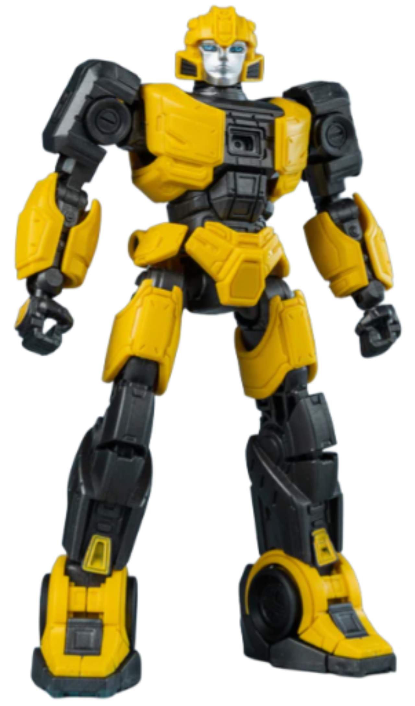
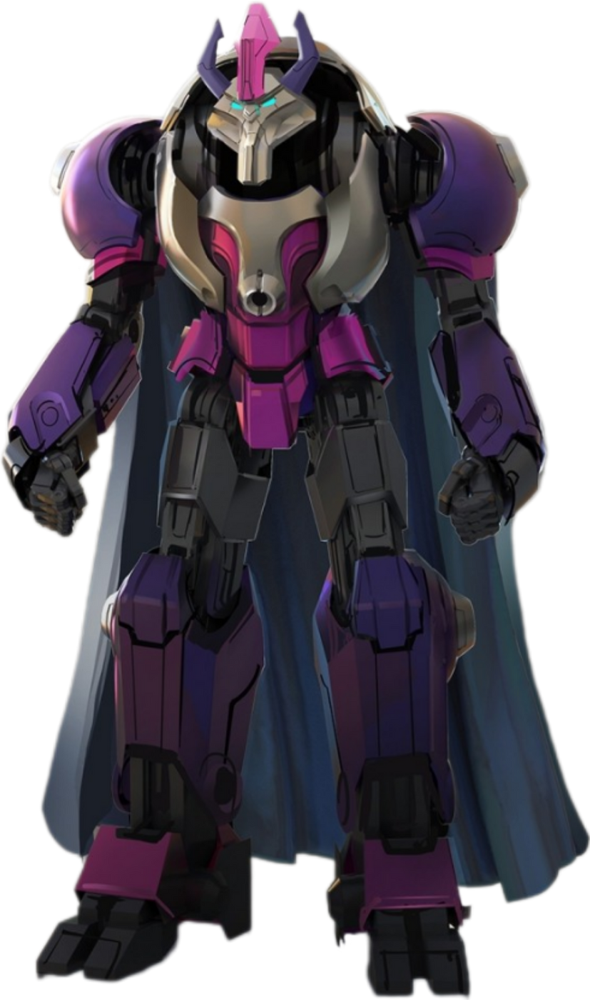

| Personaggio |
Descrizione |
Immagine |
| Sentinel Prime |
Doppiato da Jon Hamm.
Sentinel Prime è il sovrano che guida la società cybertroniana dopo la caduta degli altri Primes.
Si pone come guida per Orion Pax (futuro Optimus Prime) e D-16 (futuro Megatron), incarnando l’ideale di ordine e prosperità.
Sentinel Prime dichiara di voler trovare la Matrice per garantire equilibrio e abbondanza di Energon su Cybertron.
Non viene mostrata la sua modalità veicolo ma è capace di volare e nella modalità robot sono presenti delle Ali di un jet
quindi è probabile che si transformi in un jet cybertroniano.
Combatte con spada e scudo ma anche con dei cannoni integrati nelle braccia e razzi anch'essi integrati. |
 |
| Orion Pax |
Doppiato da Chris Hemsworth(Attore di Thor nei film del marvel cinematic universe).
Orion Pax nasce come un semplice minatore di energon, senza ingranaggio di transformarzione.
Spinto dalla voglia di avventura, si intrufola negli archivi per studiare i Prime e spesso trascina il suo amico D-16 in guai e regole infrante.
È entusiasta, ottimista e determinato, ma anche ingenuo infatti la sua fiducia cieca nelle proprie idee lo porta a rischiare molto, pur mantenendo
sempre la convinzione di poter fare la differenza. |
 |
| D-16 |
doppiato da Brian Tyree Henry.
Come Orion Pax, anche D-16 nasce come lavoratore semplice, impegnato nell’estrazione di energon.
È un personaggio pragmatico, meno impulsivo di Orion Pax, ma animato da un desiderio di potere e di riscatto sociale.
D-16 rimane affascinato dalle idee di forza e ordine di Sentinel Prime, vedendo in lui un modello di leadership. |
 |
| B-127 |
Doppiato da Keegan-Michael Key.
È coraggioso, leale e curioso, ma anche un gran chiaccherone impulsivo e incline a mettersi nei guai. La sua natura giovanile lo rende un personaggio
più vicino al pubblico, spesso con tratti comici e affettuosi. Soffre di solitudine e quando Orion e D-16 lo trovano solo e con dei
bot costruiti con dei rifiuti per farsi compagnia pensando che siano veri. |
 |
| Elita-one |
doppiata da Scarlett Johansson.
Elita-One inizia come responsabile di una squadra di estrazione, dimostrando capacità organizzative e fermezza.
È pragmatica, severa e non tollera errori, ma questa durezza è bilanciata da un forte senso di responsabilità verso Cybertron.
Sa pianificare e guidare, con un approccio più razionale rispetto all’entusiasmo impulsivo di Orion Pax.
Spesso usa un tono sarcastico, soprattutto con chi considera meno capace, ma questo la rende anche un personaggio vivace e realistico. |
 |
| alpha trion |
Doppiato da Laurence Fishburne.
Alpha Trion è il guardiano degli Archivi di Iacon, custode della storia e delle conoscenze di Cybertron.
Non è un guerriero in prima linea, ma un consigliere che indirizza Orion Pax e D-16, aiutandoli a comprendere il peso delle loro scelte.
È uno degli ultimi sopravvissuti legati alla stirpe dei Primes, e rappresenta il ponte tra il passato glorioso e il futuro incerto.
Alpha Trion è riflessivo, preferisce la parola alla forza, e trasmette insegnamenti attraverso parabole e ricordi. |
 |
| Starscream |
doppiato da Steve Buscemi.
Leader dell'alta guardia, guerrieri di Cybertron al servizio dei 13 prime.
Ama vantarsi delle sue abilità e cerca costantemente di dimostrare di essere superiore.
Non affronta mai i nemici senza calcolare i rischi, preferendo strategie che lo mantengano al sicuro.
All’interno del gruppo, è spesso colui che mette in discussione le decisioni del leader, creando tensioni.
Si intravedono la sua sete di potere e la volontà di scalare le gerarchie.
Starscream nasce come combattente agile e veloce, con una modalità veicolo cybertroniana da caccia. |
 |
| Shockwave |
Doppiato da Jason Konopisos-Alvarez.
Shockwave viene presentato in una veste parzialmente diversa rispetto alla sua classica natura di scienziato freddo e calcolatore,
ma in questo film fa da spalla comica e luogotenente irascibile.
È uno dei leader dell'Alta guardia, i guerrieri di Cybertron di cui fanno parte anche Soundwave e Starscream che vivono in esilio dopo la scomparsa dei Prime.
Inizialmente agisce come terzo in comando sotto Starscream, insieme a Soundwave. A differenza delle sue versioni precedenti dominate dalla logica pura,
qui è ritratto come irascibile, aggressivo e impaziente. È particolarmente infastidito dalla logorrea di B-12
|  |
| Soundwave |
Membro di alto rango dell'alta Guardia e uno dei luogotenenti principali di Starscrea.
Parla pochissimo, molto meno dei suoi compagni. La sua comunicazione è essenziale, diretta, priva di emozioni superflue.
È un analista perfetto: calcola, osserva, registra. La sua mente funziona come un archivio vivente, sempre focalizzato sulla missione.
È fedele alla catena di comando, ma la sua lealtà è basata sull’efficienza e sulla logica, non sull’affetto.
Riconosce la forza e l’autorità, e agisce di conseguenza. |
 |
| Airachnid |
Airachnid è la sorvegliante e principale enforcer di Sentinel Prime. È una figura temuta su Cybertron, nota per la sua ferocia e per la totale assenza di scrupo
È sadica e implacambile infatti ama la caccia e torturare i prigionieri. È una specialista della sorveglianza, capace di monitorare chiunque e qualunque
cosa possa minacciare il potere di Sentinel Prime. La sua fedeltà è rivolta esclusivamente a Sentinel e al mantenimento del suo dominio. |
 |
| Quintessensiale |
I Quintessenziali sono una razza antichissima, spesso rappresentata come i creatori originali dei Transformers nelle versioni più classiche della lore.
Sono noti per la loro intelligenza superiore, la totale assenza di empatia, la tendenza a trattare i Transformers come proprietà, non come esseri viventi
|
 |